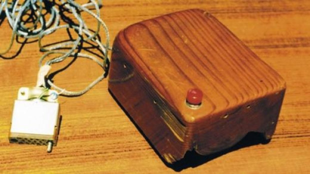
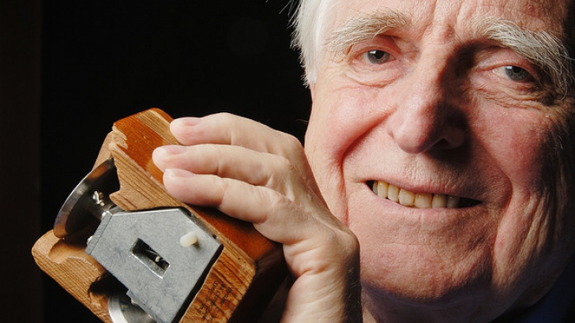

|
Dr. Douglas C. Engelbart (30 Ocak 1925 - 2 Temmuz 2013) Norveç asıllı bir Amerika'lı Engelbart‘a bilgisayar faresini bulmasında en çok katkı sağlayan kişi
Bill English‘tir.İlk fare Engelbart‘ın tek çalışması ve keşfi bilgisayar faresi değildi. Kelime işleme, video konferans, |
 |
|
Farenin ardından Douglas Engelbart’ın dünyaya en büyük katkısı ise internetin ortaya çıkmasını Engelbart hayatı boyunca araştırmaları ve çalışmaları nedeniyle birçok ödüle layık görüldü. Engelbart, bilgisayar devrimine mouse’u icatıyla yön vermiş olsa da bu icadından çok fazla para 20’den fazla patent sahibi olan Douglas Engelbart kızı ile beraber Doug Engelbart Institute[3] |
 |
Referanslar
|